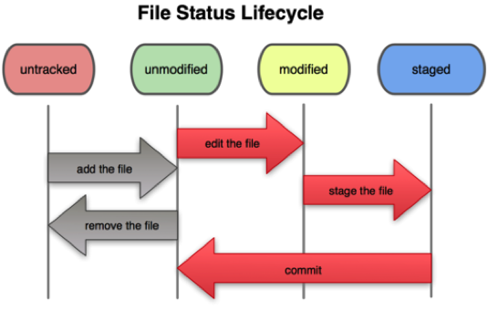

We’ve talked about the following git commands:
- init – Initialize a repository
- add – add (stage) a file to the repository
- checkout – copy file contents from the repo to the working directory
- commit – Put a staged file into the repo permanently
- diff – compare the content of the file in the working directory to the corresponding object in the repo
- reset – unstage files
- rm – remove files from the repo/working directory
- mv – move/rename files
- show – Show metadata, including history, of an object in the repo
- status – Summarize the state of the working directory compared to the latest state of the repo for these objects.
A great way to think about the managed directory concept is in terms of our state machines (UML statecharts) from last semester. A file in a working directory has several states which change based upon the commands above (from ProGit section 2.2):
To see if you really understand what is going on, edit ButtonFrame.java again, and stage it to the repo (remember how?). But don’t commit. Instead, after staging, edit the file again and add a new comment line. What state do you think the file is in? Use git status to find out. Can you explain what you see?